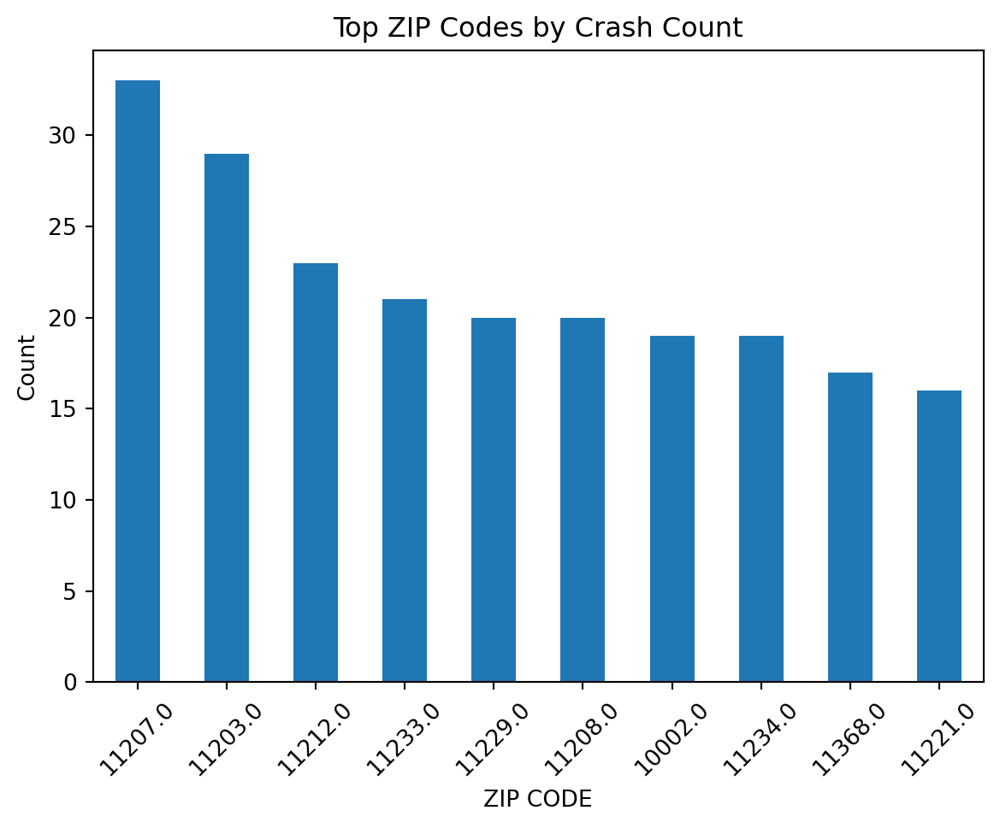

Data analysis begins with importing data and ends with exporting results. Before creating visualizations or running models, the dataset must be loaded correctly into memory. Small mistakes such as incorrect file paths, wrong delimiters or unparsed date columns can change how the data behaves. If these issues are not identified early, they affect every step of the workflow.
This presentation focuses on building a reproducible importing and exporting workflow using pandas in Python.
6.1.2 Pandas
Pandas is a Python library used for working with tabular data. It allows data to be stored in a DataFrame, which is similar to a spreadsheet or SQL table.
6.1.3 Importing CSV Files
CSV (Comma Separated Values) files are the most common format for storing structured data. In pandas, CSV files are imported using the read_csv() function.
6.1.3.1 Real-World Example
The dataset used in this example is nyc_crashes_lbdwk_2025.csv, located in the data folder of the course repository. This file contains weekly crash records and has not been cleaned in order to demonstrate common issues that arise during the importing process.
import pandas as pd#Import CSV file into Data Framedf = pd.read_csv("data/nyc_crashes_lbdwk_2025.csv")#Show the first 10 rows of the dataset. df.head(10)
CRASH DATE
CRASH TIME
BOROUGH
ZIP CODE
LATITUDE
LONGITUDE
LOCATION
ON STREET NAME
CROSS STREET NAME
OFF STREET NAME
...
CONTRIBUTING FACTOR VEHICLE 2
CONTRIBUTING FACTOR VEHICLE 3
CONTRIBUTING FACTOR VEHICLE 4
CONTRIBUTING FACTOR VEHICLE 5
COLLISION_ID
VEHICLE TYPE CODE 1
VEHICLE TYPE CODE 2
VEHICLE TYPE CODE 3
VEHICLE TYPE CODE 4
VEHICLE TYPE CODE 5
0
08/31/2025
12:49
QUEENS
11101.0
40.753113
-73.933700
(40.753113, -73.9337)
30 ST
39 AVE
NaN
...
NaN
NaN
NaN
NaN
4838875
Station Wagon/Sport Utility Vehicle
NaN
NaN
NaN
NaN
1
08/31/2025
15:30
MANHATTAN
10022.0
40.760600
-73.964320
(40.7606, -73.96432)
E 59 ST
2 AVE
NaN
...
NaN
NaN
NaN
NaN
4839110
Station Wagon/Sport Utility Vehicle
NaN
NaN
NaN
NaN
2
08/31/2025
19:00
NaN
NaN
40.734234
-73.722750
(40.734234, -73.72275)
CROSS ISLAND PARKWAY
HILLSIDE AVENUE
NaN
...
Unspecified
Unspecified
NaN
NaN
4838966
Sedan
Sedan
NaN
NaN
NaN
3
08/31/2025
1:19
BROOKLYN
11220.0
40.648075
-74.007034
(40.648075, -74.007034)
NaN
NaN
4415 5 AVE
...
Unspecified
NaN
NaN
NaN
4838563
Sedan
E-Bike
NaN
NaN
NaN
4
08/31/2025
2:41
MANHATTAN
10036.0
40.756560
-73.986110
(40.75656, -73.98611)
W 43 ST
BROADWAY
NaN
...
Unspecified
NaN
NaN
NaN
4838922
Station Wagon/Sport Utility Vehicle
Bike
NaN
NaN
NaN
5
08/31/2025
19:42
BRONX
10466.0
40.887672
-73.847046
(40.887672, -73.847046)
LACONIA AVE
GRENADA PL
NaN
...
NaN
NaN
NaN
NaN
4839184
NaN
NaN
NaN
NaN
NaN
6
08/31/2025
8:21
BROOKLYN
11221.0
40.689217
-73.917650
(40.689217, -73.91765)
BUSHWICK AVE
PUTNAM AVE
NaN
...
Unspecified
Unspecified
NaN
NaN
4839066
Sedan
Sedan
Station Wagon/Sport Utility Vehicle
NaN
NaN
7
08/31/2025
2:50
QUEENS
11411.0
40.685990
-73.728730
(40.68599, -73.72873)
120 AVE
236 ST
NaN
...
Unspecified
Unspecified
Unspecified
NaN
4838591
Sedan
Sedan
Sedan
Station Wagon/Sport Utility Vehicle
NaN
8
08/31/2025
21:45
QUEENS
11434.0
40.673023
-73.776566
(40.673023, -73.776566)
161 ST
134 AVE
NaN
...
Unspecified
Unspecified
Unspecified
NaN
4839302
Sedan
Sedan
Sedan
Sedan
NaN
9
08/31/2025
10:25
QUEENS
11004.0
40.736750
-73.711030
(40.73675, -73.71103)
HILLSIDE AVE
257 ST
NaN
...
Unspecified
NaN
NaN
NaN
4838641
Station Wagon/Sport Utility Vehicle
Sedan
NaN
NaN
NaN
10 rows × 29 columns
Importing the file is only the first step. After loading the dataset, it is important to verify its structure before proceeding with analysis.
6.1.3.2 Verifying the Structure
Importing a dataset doesn’t guarantee that it was interpreted correctly. After immediately loading the file, the structure should be verified. So, checking the data types of each column is critical and is completed using the dtypes attribute.
df.shape
(1487, 29)
The shape attribute will confirm the number of rows and columns. This helps detect incomplete or truncated files.
df.dtypes
CRASH DATE object
CRASH TIME object
BOROUGH object
ZIP CODE float64
LATITUDE float64
LONGITUDE float64
LOCATION object
ON STREET NAME object
CROSS STREET NAME object
OFF STREET NAME object
NUMBER OF PERSONS INJURED int64
NUMBER OF PERSONS KILLED int64
NUMBER OF PEDESTRIANS INJURED int64
NUMBER OF PEDESTRIANS KILLED int64
NUMBER OF CYCLIST INJURED int64
NUMBER OF CYCLIST KILLED int64
NUMBER OF MOTORIST INJURED int64
NUMBER OF MOTORIST KILLED int64
CONTRIBUTING FACTOR VEHICLE 1 object
CONTRIBUTING FACTOR VEHICLE 2 object
CONTRIBUTING FACTOR VEHICLE 3 object
CONTRIBUTING FACTOR VEHICLE 4 object
CONTRIBUTING FACTOR VEHICLE 5 object
COLLISION_ID int64
VEHICLE TYPE CODE 1 object
VEHICLE TYPE CODE 2 object
VEHICLE TYPE CODE 3 object
VEHICLE TYPE CODE 4 object
VEHICLE TYPE CODE 5 object
dtype: object
The dtypes attribute shows how pandas interpreted each column. This is important because data type determines how a variable behaves during filtering and modeling.
df.info()
<class 'pandas.core.frame.DataFrame'>
RangeIndex: 1487 entries, 0 to 1486
Data columns (total 29 columns):
# Column Non-Null Count Dtype
--- ------ -------------- -----
0 CRASH DATE 1487 non-null object
1 CRASH TIME 1487 non-null object
2 BOROUGH 1203 non-null object
3 ZIP CODE 1203 non-null float64
4 LATITUDE 1475 non-null float64
5 LONGITUDE 1475 non-null float64
6 LOCATION 1475 non-null object
7 ON STREET NAME 1031 non-null object
8 CROSS STREET NAME 900 non-null object
9 OFF STREET NAME 456 non-null object
10 NUMBER OF PERSONS INJURED 1487 non-null int64
11 NUMBER OF PERSONS KILLED 1487 non-null int64
12 NUMBER OF PEDESTRIANS INJURED 1487 non-null int64
13 NUMBER OF PEDESTRIANS KILLED 1487 non-null int64
14 NUMBER OF CYCLIST INJURED 1487 non-null int64
15 NUMBER OF CYCLIST KILLED 1487 non-null int64
16 NUMBER OF MOTORIST INJURED 1487 non-null int64
17 NUMBER OF MOTORIST KILLED 1487 non-null int64
18 CONTRIBUTING FACTOR VEHICLE 1 1478 non-null object
19 CONTRIBUTING FACTOR VEHICLE 2 1132 non-null object
20 CONTRIBUTING FACTOR VEHICLE 3 129 non-null object
21 CONTRIBUTING FACTOR VEHICLE 4 40 non-null object
22 CONTRIBUTING FACTOR VEHICLE 5 13 non-null object
23 COLLISION_ID 1487 non-null int64
24 VEHICLE TYPE CODE 1 1470 non-null object
25 VEHICLE TYPE CODE 2 1012 non-null object
26 VEHICLE TYPE CODE 3 124 non-null object
27 VEHICLE TYPE CODE 4 35 non-null object
28 VEHICLE TYPE CODE 5 13 non-null object
dtypes: float64(3), int64(9), object(17)
memory usage: 337.0+ KB
The info() function provides a summary of the counts and data types. This helps identify columns with missing values and detect unexpected type assignments.
6.1.4 Common Mistakes When Importing CSV Files
By importing a dataset, it doesn’t guarantee that it was interpreted correctly. Many issues occur silently, meaning the dataset loads without error but behaves incorrectly during analysis.
The following examples demonstrate common mistakes and how to identify and fix them.
6.1.4.1 Incorrect File Path
A very common issue that arises when importing data is an incorrect file path.
FileNotFoundError: [Errno 2] No such file or directory: 'nyc_crashes_lbdwk_2025.csv'
This error occurs because Python searches for the file in the current working directory. Since the file is stored inside the data folder, the relative path must include that folder name.
The working directory determines where Python searches for files when using relative paths. If the file is stored inside a folder, the path must reflect that structure.
In some files, the separator between values is not a comma. If the delimiter is incorrect, the entire dataset may appear as a single column. In those cases, the correct separator must be specified.
# Example of incorrect delimiterdf_wrong = pd.read_csv("data/nyc_crashes_lbdwk_2025.csv", sep=";")df_wrong.head(10)
CRASH DATE,CRASH TIME,BOROUGH,ZIP CODE,LATITUDE,LONGITUDE,LOCATION,ON STREET NAME,CROSS STREET NAME,OFF STREET NAME,NUMBER OF PERSONS INJURED,NUMBER OF PERSONS KILLED,NUMBER OF PEDESTRIANS INJURED,NUMBER OF PEDESTRIANS KILLED,NUMBER OF CYCLIST INJURED,NUMBER OF CYCLIST KILLED,NUMBER OF MOTORIST INJURED,NUMBER OF MOTORIST KILLED,CONTRIBUTING FACTOR VEHICLE 1,CONTRIBUTING FACTOR VEHICLE 2,CONTRIBUTING FACTOR VEHICLE 3,CONTRIBUTING FACTOR VEHICLE 4,CONTRIBUTING FACTOR VEHICLE 5,COLLISION_ID,VEHICLE TYPE CODE 1,VEHICLE TYPE CODE 2,VEHICLE TYPE CODE 3,VEHICLE TYPE CODE 4,VEHICLE TYPE CODE 5
0
08/31/2025,12:49,QUEENS,11101,40.753113,-73.93...
1
08/31/2025,15:30,MANHATTAN,10022,40.7606,-73.9...
2
08/31/2025,19:00,,,40.734234,-73.72275,"(40.73...
3
08/31/2025,1:19,BROOKLYN,11220,40.648075,-74.0...
4
08/31/2025,2:41,MANHATTAN,10036,40.75656,-73.9...
5
08/31/2025,19:42,BRONX,10466,40.887672,-73.847...
6
08/31/2025,8:21,BROOKLYN,11221,40.689217,-73.9...
7
08/31/2025,2:50,QUEENS,11411,40.68599,-73.7287...
8
08/31/2025,21:45,QUEENS,11434,40.673023,-73.77...
9
08/31/2025,10:25,QUEENS,11004,40.73675,-73.711...
In this case, the entire dataset loads into a single column. This happens because the file actually uses commas, not semicolons.
The correct import removes the incorrect separator argument:
The argument errors=“coerce” converts invalid values into missing values rather than raising an error.
6.1.4.5 Missing Values
Missing values affect summary statistics and modeling decisions. They should be inspected early.
df.isnull().sum()
CRASH DATE 0
CRASH TIME 0
BOROUGH 284
ZIP CODE 284
LATITUDE 12
LONGITUDE 12
LOCATION 12
ON STREET NAME 456
CROSS STREET NAME 587
OFF STREET NAME 1031
NUMBER OF PERSONS INJURED 0
NUMBER OF PERSONS KILLED 0
NUMBER OF PEDESTRIANS INJURED 0
NUMBER OF PEDESTRIANS KILLED 0
NUMBER OF CYCLIST INJURED 0
NUMBER OF CYCLIST KILLED 0
NUMBER OF MOTORIST INJURED 0
NUMBER OF MOTORIST KILLED 0
CONTRIBUTING FACTOR VEHICLE 1 9
CONTRIBUTING FACTOR VEHICLE 2 355
CONTRIBUTING FACTOR VEHICLE 3 1358
CONTRIBUTING FACTOR VEHICLE 4 1447
CONTRIBUTING FACTOR VEHICLE 5 1474
COLLISION_ID 0
VEHICLE TYPE CODE 1 17
VEHICLE TYPE CODE 2 475
VEHICLE TYPE CODE 3 1363
VEHICLE TYPE CODE 4 1452
VEHICLE TYPE CODE 5 1474
dtype: int64
Checking missing values early helps identify which variables may require cleaning before modeling.
6.1.5 Importing Other Common Formats
While CSV is the most common format, pandas supports many other file types used in practice.
6.1.5.1 Excel Files
Excel files are frequently used in business settings. They can be imported using read_excel().
Excel files may contain multiple sheets, so specifying sheet_name is often necessary. Similar to CSV, the structure should be verified immediately after import using .shape, .info(), and .dtypes.
6.1.5.2 JSON Files
JSON files are commonly used in web applications and APIs. They can be imported using read_json().
df_json = pd.read_json("data/example.json")
Unlike CSV and Excel, JSON files may contain nested structures. In those cases, additional processing such as normalization may be required before analysis.
6.1.6 Comparing CSV and Feather Formats
CSV is the most common format for tabular data, but it is not always the most efficient. Feather is a binary format designed for speed and type preservation.
Feather files require the pyarrow dependency. In some environments, attempting to read a Feather file without pyarrow installed will result in an ImportError. This highlights an important reproducibility lesson: certain file formats require additional dependencies that must be installed before use.
Feather files are optimized for performance and type preservation, making them well-suited for large-scale workflows. However, because they are binary and not human-readable, CSV files remain more portable and easier to inspect manually.
6.1.7 Exporting Data
After verifying and cleaning the dataset, the results can be exported for reuse or collaboration. Exporting ensures that the cleaned version of the data can be shared or reused without repeating the cleaning steps.
For example, the cleaned DataFrame can be exported to a new CSV file.
This command creates a new CSV file containing the cleaned dataset. The argument index=False prevents pandas from writing the DataFrame index as an extra column. Forgetting this argument often results in unwanted columns such as “Unnamed: 0” when the file is imported again.
6.1.7.1 Exporting Figures
import matplotlib.pyplot as pltimport osplt.figure()df["ZIP CODE"].value_counts().head(10).plot(kind="bar")plt.title("Top ZIP Codes by Crash Count")plt.ylabel("Count")plt.xticks(rotation=45)os.makedirs("figures", exist_ok=True)plt.savefig("figures/top_zipcodes.png", dpi=300, bbox_inches="tight")plt.show()plt.close()

The savefig() function saves the visualization to a file:
dpi=300 ensures high resolution for reports.
bbox_inches="tight" removes excess whitespace.
Saving figures to a figures/ folder improves project organization.
6.1.8 Best Practices for Importing and Exporting Data
The following practices help prevent silent errors:
Inspect the shape, data types, and missing values immediately after importing a dataset.
Use relative file paths within a repository to maintain portability.
Parse date columns during import instead of converting them later.
Avoid manually editing raw data files after they are stored.
Separate raw data from processed outputs within the project directory.
Always verify structure before beginning analysis.
#A cursor variable will be created that will help run all SQL queriescursor = sql_database_connection.cursor()#Executes the SQL query to create the tablecursor.execute('CREATE TABLE lemon_types_new (organic_or_not TEXT, GMO_or_NOT TEXT)')#Executes the SQL query to insert into the tablecursor.execute('INSERT INTO lemon_types_new VALUES ("Yes", "Yes")')
<sqlite3.Cursor at 0x117ce2740>
To store your sql query, create a variable.
sql_query ="""SELECT * FROM lemon_types_new"""
To execute the sql_query, create a data frame using pandas. Then, use the function, .read_sql_query, to read the sql_query. The two arguments of the function are the sql_query and the sql_database_connection.
Important note: If the database has not been created yet, the sqlite3.connect() command will create a new database.
“To convert the data frame to a table in sql, use the command, df.to_sql(). This command should have THREE arguments:
The first argument is name, which specifies the name of the dataframe.
The second argument is con, which specifies the connection to a specific database.
The third argument, which is optional, is if_exists=REPLACE. This argument makes sure that if there are two sql tables with the same name, the older sql tale will be replaced by the newer sql table.
The last argument, whcih is also optional, is index = (TRUE, FALSE). If index = TRUE, this creates a numerical index for the data frame. However, if index = FALSE, there will be no numerical index applied to the data frame.
Next, create an object, called cursor, to run SQL queries. This object is a variable that represents the .cursor() attribute of the sql database connection.
cursor = sql_database_connection.cursor()
Afterwards, execute a SQL command using cursor.execute(“SQL command”)
The table has columns named owner and weekly_sales_avg
The data type for the owner column is TEXT
The data type for the weekly_sales_avg column is INT
cursor.execute('INSERT INTO new_lemonade_stand VALUES ("Lavender", 300)')
<sqlite3.Cursor at 0x117de0ec0>
Adds data to the lemonade_stand table, using the command, INSERT INTO
It is important to save any alterations to the database by using a special sql_database_connection.commit() command.
sql_database_connection.commit()
To view the result of a SQL query, it is necessary to perform the cursor.fetchall() function:
cursor.execute('SELECT * FROM new_lemonade_stand')sql_table_result = cursor.fetchall()print(sql_table_result)
[('Lavender', 300)]
6.2.5 How to display cursor.fetchall() results in a pandas data frame
cursor.execute('SELECT * FROM new_lemonade_stand')rows_fetched = cursor.fetchall()columns_fetched = [metadata_description[0] for metadata_description in cursor.description]data_frame_fetched = pd.DataFrame(rows_fetched, columns=columns_fetched)print(data_frame_fetched)
owner weekly_sales_avg
0 Lavender 300
6.2.6 Types of Commands In SQL
6.2.6.1 Data Definition Language (DDL):
SQL statements that name, change the structuer of, and eliminate objects in a database
6.2.6.2 Data Control Language (DCL):
SQL statements that control who has access to database data.
6.2.6.3 Data Manipulation Language (DML):
SQL statements that do not impact database structure. Instead, these statements change/access objects inside a database.
6.2.6.4 Data Transaction Control (DTC):
4.Track how Data Manipulation Language commands change objects in a database by logging these changes as transactions.
6.2.7 Exploring Types of Data Manipulation Language (DML) Commands
Selection: Involves selecting specific rows from a table
Projection: Involves selecting specific columns from a table
Joining: Involves joining tables together
6.2.7.1 Exploring SELECTION with organic_lemonade_stand data table:
The below code helps create the organic_lemonade_stand data table:
cursor.execute('CREATE TABLE organic_lemonade_stand (owner TEXT, location TEXT, weekly_expenses_avg INT, weekly_sales_avg INT)')cursor.execute('INSERT INTO organic_lemonade_stand VALUES ("Lily", "Florida", 100, 500)')cursor.execute('INSERT INTO organic_lemonade_stand VALUES ("Summer", "California", 300, 800)')cursor.execute('INSERT INTO organic_lemonade_stand VALUES ("Layla", "New York", 200, 250)')cursor.execute('INSERT INTO organic_lemonade_stand VALUES ("Beatrice", "Alaska", 50, 60)')cursor.execute('INSERT INTO organic_lemonade_stand VALUES ("Carla", "Massachusetts", 250, 300)')sql_database_connection.commit()
The below code helps select all rows in the organic_lemonade_stand data table:
cursor.execute('SELECT * FROM organic_lemonade_stand')rows_fetched = cursor.fetchall()columns_fetched = [metadata_description[0] for metadata_description in cursor.description]data_frame_fetched = pd.DataFrame(rows_fetched, columns=columns_fetched)print(data_frame_fetched)
owner location weekly_expenses_avg weekly_sales_avg
0 Lily Florida 100 500
1 Summer California 300 800
2 Layla New York 200 250
3 Beatrice Alaska 50 60
4 Carla Massachusetts 250 300
6.2.7.2 Exploring PROJECTION with organic_lemonade_stand database
The owner column is being selected
cursor.execute('SELECT owner FROM organic_lemonade_stand')rows_fetched = cursor.fetchall()columns_fetched = [metadata_description[0] for metadata_description in cursor.description]data_frame_fetched = pd.DataFrame(rows_fetched, columns=columns_fetched)print(data_frame_fetched)
owner
0 Lily
1 Summer
2 Layla
3 Beatrice
4 Carla
6.2.7.3 Exploring SELECTION & PROJECTION combined
The owner column is being selected (projection), and rows where weekly_expenses_avg is greater than 100 is also selected (selection).
cursor.execute('SELECT owner, weekly_expenses_avg FROM organic_lemonade_stand WHERE weekly_expenses_avg > 100')rows_fetched = cursor.fetchall()columns_fetched = [metadata_description[0] for metadata_description in cursor.description]data_frame_fetched = pd.DataFrame(rows_fetched, columns=columns_fetched)print(data_frame_fetched)
6.2.7.4 Exploring JOINING with organic_lemonade_stand data table and sparkling_lemon_water data table
The below code creates the sparkling_lemon_water data table:
cursor.execute('CREATE TABLE sparkling_lemon_water (owner TEXT, location TEXT, weekly_expenses_avg INT, weekly_sales_avg INT)')cursor.execute('INSERT INTO sparkling_lemon_water VALUES ("Daisy", "Florida", 20, 65)')cursor.execute('INSERT INTO sparkling_lemon_water VALUES ("Kathy", "California", 65, 160)')cursor.execute('INSERT INTO sparkling_lemon_water VALUES ("Samantha", "New York", 85, 280)')cursor.execute('INSERT INTO sparkling_lemon_water VALUES ("Samantha", "New York", 85, 280)')sql_database_connection.commit()
6.2.7.4.1 INNER JOIN: A type of SQL join where rows that are common in both tables are presented in the output.
cursor.execute('SELECT * FROM organic_lemonade_stand INNER JOIN sparkling_lemon_water ON organic_lemonade_stand.location = sparkling_lemon_water.location')rows_fetched = cursor.fetchall()columns_fetched = [metadata_description[0] for metadata_description in cursor.description]data_frame_fetched = pd.DataFrame(rows_fetched, columns=columns_fetched)print(data_frame_fetched)
owner location weekly_expenses_avg weekly_sales_avg owner \
0 Lily Florida 100 500 Daisy
1 Summer California 300 800 Kathy
2 Layla New York 200 250 Samantha
3 Layla New York 200 250 Samantha
location weekly_expenses_avg weekly_sales_avg
0 Florida 20 65
1 California 65 160
2 New York 85 280
3 New York 85 280
6.2.7.4.2 LEFT JOIN: A type of SQL join where every row in the left table is shown in the output, along with rows in the right table that match the left table
cursor.execute('SELECT * FROM organic_lemonade_stand LEFT JOIN sparkling_lemon_water ON organic_lemonade_stand.location = sparkling_lemon_water.location')rows_fetched = cursor.fetchall()columns_fetched = [metadata_description[0] for metadata_description in cursor.description]data_frame_fetched = pd.DataFrame(rows_fetched, columns=columns_fetched)print(data_frame_fetched)
owner location weekly_expenses_avg weekly_sales_avg owner \
0 Lily Florida 100 500 Daisy
1 Summer California 300 800 Kathy
2 Layla New York 200 250 Samantha
3 Layla New York 200 250 Samantha
4 Beatrice Alaska 50 60 None
5 Carla Massachusetts 250 300 None
location weekly_expenses_avg weekly_sales_avg
0 Florida 20.0 65.0
1 California 65.0 160.0
2 New York 85.0 280.0
3 New York 85.0 280.0
4 None NaN NaN
5 None NaN NaN
6.2.7.4.3 RIGHT JOIN: A type of SQL join where every row in the right table is shown in the output, along withh rows in the left table that match the right table.
cursor.execute('SELECT * FROM organic_lemonade_stand RIGHT JOIN sparkling_lemon_water ON organic_lemonade_stand.location = sparkling_lemon_water.location')rows_fetched = cursor.fetchall()columns_fetched = [metadata_description[0] for metadata_description in cursor.description]data_frame_fetched = pd.DataFrame(rows_fetched, columns=columns_fetched)print(data_frame_fetched)
owner location weekly_expenses_avg weekly_sales_avg owner \
0 Lily Florida 100 500 Daisy
1 Summer California 300 800 Kathy
2 Layla New York 200 250 Samantha
3 Layla New York 200 250 Samantha
location weekly_expenses_avg weekly_sales_avg
0 Florida 20 65
1 California 65 160
2 New York 85 280
3 New York 85 280
6.2.8 Using Aliases In DML Statements
To reference a table, it may be easier to “alias” the table or shorten the table’s name, to make the code more readable. Below is the JOINING command, but with table aliases:
cursor.execute('SELECT * FROM organic_lemonade_stand lemon INNER JOIN sparkling_lemon_water sparkling ON lemon.location = sparkling.location')rows_fetched = cursor.fetchall()columns_fetched = [metadata_description[0] for metadata_description in cursor.description]data_frame_fetched = pd.DataFrame(rows_fetched, columns=columns_fetched)print(data_frame_fetched)
owner location weekly_expenses_avg weekly_sales_avg owner \
0 Lily Florida 100 500 Daisy
1 Summer California 300 800 Kathy
2 Layla New York 200 250 Samantha
3 Layla New York 200 250 Samantha
location weekly_expenses_avg weekly_sales_avg
0 Florida 20 65
1 California 65 160
2 New York 85 280
3 New York 85 280
6.2.9 Using DISTINCT in DML
The sparkling_lemon_water contains duplicate rows for the owner, Samantha. To only return one distinct row, we need to use the DISTINCT command.
cursor.execute('SELECT DISTINCT owner, location, weekly_expenses_avg, weekly_sales_avg FROM sparkling_lemon_water')rows_fetched = cursor.fetchall()columns_fetched = [metadata_description[0] for metadata_description in cursor.description]data_frame_fetched = pd.DataFrame(rows_fetched, columns=columns_fetched)print(data_frame_fetched)
owner location weekly_expenses_avg weekly_sales_avg
0 Daisy Florida 20 65
1 Kathy California 65 160
2 Samantha New York 85 280
6.2.10 Logical Operators
AND: If both conditions are TRUE, the entire expression is TRUE
OR: If at least one condition is TRUE, the entire expression is TRUE
NOT: Returns TRUE if NOT FALSE, and Returns FALSE if NOT TRUE
6.2.10.1 Example of AND - Logical Operators
cursor.execute('SELECT * FROM organic_lemonade_stand WHERE weekly_expenses_avg < 300 AND weekly_sales_avg > 200')rows_fetched = cursor.fetchall()columns_fetched = [metadata_description[0] for metadata_description in cursor.description]data_frame_fetched = pd.DataFrame(rows_fetched, columns=columns_fetched)print(data_frame_fetched)
owner location weekly_expenses_avg weekly_sales_avg
0 Lily Florida 100 500
1 Layla New York 200 250
2 Carla Massachusetts 250 300
6.2.10.2 Example of OR - Logical Operators
cursor.execute('SELECT * FROM organic_lemonade_stand WHERE weekly_expenses_avg < 300 OR weekly_sales_avg > 500')rows_fetched = cursor.fetchall()columns_fetched = [metadata_description[0] for metadata_description in cursor.description]data_frame_fetched = pd.DataFrame(rows_fetched, columns=columns_fetched)print(data_frame_fetched)
owner location weekly_expenses_avg weekly_sales_avg
0 Lily Florida 100 500
1 Summer California 300 800
2 Layla New York 200 250
3 Beatrice Alaska 50 60
4 Carla Massachusetts 250 300
6.2.10.3 Example of NOT - Logical Operators
cursor.execute('SELECT * FROM organic_lemonade_stand WHERE NOT weekly_expenses_avg < 100')rows_fetched = cursor.fetchall()columns_fetched = [metadata_description[0] for metadata_description in cursor.description]data_frame_fetched = pd.DataFrame(rows_fetched, columns=columns_fetched)print(data_frame_fetched)
owner location weekly_expenses_avg weekly_sales_avg
0 Lily Florida 100 500
1 Summer California 300 800
2 Layla New York 200 250
3 Carla Massachusetts 250 300
6.2.11 Arithmetic Operators
We can create a new alias, weekly_profits_avg, by subtracting the weekly_expenses_avg column from the weekly_sales_column, using arithmetic operators.
cursor.execute('SELECT weekly_sales_avg - weekly_expenses_avg AS weekly_profits_avg FROM organic_lemonade_stand')rows_fetched = cursor.fetchall()columns_fetched = [metadata_description[0] for metadata_description in cursor.description]data_frame_fetched = pd.DataFrame(rows_fetched, columns=columns_fetched)print(data_frame_fetched)
weekly_profits_avg
0 400
1 500
2 50
3 10
4 50
6.2.12 Concatenation Operators
We can concatenate two columns together using a special concatenation operator:
cursor.execute("SELECT owner||': '||location AS 'owner location' FROM organic_lemonade_stand")rows_fetched = cursor.fetchall()columns_fetched = [metadata_description[0] for metadata_description in cursor.description]data_frame_fetched = pd.DataFrame(rows_fetched, columns=columns_fetched)print(data_frame_fetched)
owner location
0 Lily: Florida
1 Summer: California
2 Layla: New York
3 Beatrice: Alaska
4 Carla: Massachusetts
In this example, the owner and location columns are being concatenated to form the owner location column.
6.2.13 ORDER BY and DESC
We can find what owner is the most profitable by using the ORDER BY operator. ORDER BY always orderes entries from least to greatest. However, ORDER BY (insert name of column) DESC to order the columns from greatest to least.
ORDER BY Example:
cursor.execute('SELECT * FROM organic_lemonade_stand ORDER BY weekly_expenses_avg')rows_fetched = cursor.fetchall()columns_fetched = [metadata_description[0] for metadata_description in cursor.description]data_frame_fetched = pd.DataFrame(rows_fetched, columns=columns_fetched)print(data_frame_fetched)
owner location weekly_expenses_avg weekly_sales_avg
0 Beatrice Alaska 50 60
1 Lily Florida 100 500
2 Layla New York 200 250
3 Carla Massachusetts 250 300
4 Summer California 300 800
ORDER BY DESC Example:
cursor.execute('SELECT * FROM organic_lemonade_stand ORDER BY weekly_expenses_avg DESC')rows_fetched = cursor.fetchall()columns_fetched = [metadata_description[0] for metadata_description in cursor.description]data_frame_fetched = pd.DataFrame(rows_fetched, columns=columns_fetched)print(data_frame_fetched)
owner location weekly_expenses_avg weekly_sales_avg
0 Summer California 300 800
1 Carla Massachusetts 250 300
2 Layla New York 200 250
3 Lily Florida 100 500
4 Beatrice Alaska 50 60
6.2.14 Set Operators
UNION: Produces a set combining outputs created by 2 SELECT queries. Any rows that are duplicated are not part of the resulting set.
UNION ALL: Similar to UNION, this produces a set combining outputs created by 2 SELECT queries. However, any rows that are duplicated are displayed in the resulting set.
INTERSECT: Finds rows that are shared by both tables/SELECT queries. The output contains distinct rows.
MINUS/EXCEPT: Finds rows that the first SELECT query has but the second SELECT query does not have. These rows are distinct. Note that MINUS is not compatible with SQLITE, and is only compatible with ORACLE
Below is code that creates the numerical_data table:
cursor.execute('CREATE TABLE numerical_data (numbers INT)')cursor.execute('INSERT INTO numerical_data VALUES (1)')cursor.execute('INSERT INTO numerical_data VALUES (1)')cursor.execute('INSERT INTO numerical_data VALUES (1)')cursor.execute('INSERT INTO numerical_data VALUES (2)')cursor.execute('INSERT INTO numerical_data VALUES (3)')cursor.execute('INSERT INTO numerical_data VALUES (4)')cursor.execute('INSERT INTO numerical_data VALUES (10)')
<sqlite3.Cursor at 0x117de0ec0>
Below is code that creates the cool_numbers_data table:
cursor.execute('CREATE TABLE cool_numbers_data (cool_numbers INT)')cursor.execute('INSERT INTO cool_numbers_data VALUES (1)')cursor.execute('INSERT INTO cool_numbers_data VALUES (2)')cursor.execute('INSERT INTO cool_numbers_data VALUES (3)')cursor.execute('INSERT INTO cool_numbers_data VALUES (4)')cursor.execute('INSERT INTO cool_numbers_data VALUES (5)')
<sqlite3.Cursor at 0x117de0ec0>
Example of the UNION OPERATOR: Finds the union of the data tables, numerical_data and cool_numbers_data:
cursor.execute('SELECT numbers FROM numerical_data UNION SELECT cool_numbers FROM cool_numbers_data')rows_fetched = cursor.fetchall()columns_fetched = [metadata_description[0] for metadata_description in cursor.description]data_frame_fetched = pd.DataFrame(rows_fetched, columns=columns_fetched)print(data_frame_fetched)
numbers
0 1
1 2
2 3
3 4
4 5
5 10
Example of the UNION ALL OPERATOR: Finds the UNION ALL of the data tables, numerical_data and cool_numbers_data:
cursor.execute('SELECT numbers FROM numerical_data UNION ALL SELECT cool_numbers FROM cool_numbers_data')rows_fetched = cursor.fetchall()columns_fetched = [metadata_description[0] for metadata_description in cursor.description]data_frame_fetched = pd.DataFrame(rows_fetched, columns=columns_fetched)print(data_frame_fetched)
Example of the INTERSECT OPERATOR: Finds the intersection of the data tables, numerical_data and cool_numbers_data:
cursor.execute('SELECT numbers FROM numerical_data INTERSECT SELECT cool_numbers FROM cool_numbers_data')rows_fetched = cursor.fetchall()columns_fetched = [metadata_description[0] for metadata_description in cursor.description]data_frame_fetched = pd.DataFrame(rows_fetched, columns=columns_fetched)print(data_frame_fetched)
numbers
0 1
1 2
2 3
3 4
Example of the EXCEPT OPERATOR: Finds the execption of the data tables, numerical_data and cool_numbers_data:
cursor.execute('SELECT numbers FROM numerical_data EXCEPT SELECT cool_numbers FROM cool_numbers_data')rows_fetched = cursor.fetchall()columns_fetched = [metadata_description[0] for metadata_description in cursor.description]data_frame_fetched = pd.DataFrame(rows_fetched, columns=columns_fetched)print(data_frame_fetched)
numbers
0 10
6.2.15 Subqueries
Subqueries are smaller queries within a larger query. When subqueries are evaluated, they help filter the data, and this filter can applied to the larger query.
6.2.15.1 Two Types of Subqueries
The two types of subqueries are Inline Views and Nested Subqueries
6.2.15.1.1 Inline Views
When a SELECT statement has a FROM cause that contains a subquery, this is called an Inline View.
Example:
cursor.execute('SELECT owner, weekly_sales_avg, weekly_profit_avg/5 AS daily_profit_avg FROM (SELECT owner, weekly_sales_avg, weekly_sales_avg - weekly_expenses_avg AS weekly_profit_avg FROM organic_lemonade_stand) ORDER BY daily_profit_avg')rows_fetched = cursor.fetchall()columns_fetched = [metadata_description[0] for metadata_description in cursor.description]data_frame_fetched = pd.DataFrame(rows_fetched, columns=columns_fetched)print(data_frame_fetched)
When a SELECT statement has a WHERE clause that contains a subquery, this is called a Nested Subquery.
Example 1:
cursor.execute('SELECT owner, weekly_expenses_avg, weekly_sales_avg FROM organic_lemonade_stand WHERE weekly_sales_avg > (SELECT weekly_sales_avg FROM sparkling_lemon_water)')rows_fetched = cursor.fetchall()columns_fetched = [metadata_description[0] for metadata_description in cursor.description]data_frame_fetched = pd.DataFrame(rows_fetched, columns=columns_fetched)print(data_frame_fetched)
cursor.execute('SELECT owner, weekly_expenses_avg, weekly_sales_avg FROM organic_lemonade_stand WHERE weekly_sales_avg < (SELECT weekly_sales_avg FROM sparkling_lemon_water)')rows_fetched = cursor.fetchall()columns_fetched = [metadata_description[0] for metadata_description in cursor.description]data_frame_fetched = pd.DataFrame(rows_fetched, columns=columns_fetched)print(data_frame_fetched)
Subqueries can be categorized further into three classes.
The three classes of Subqueries are as follows: Single-row subqueries, Multiple-row subqueries, and Correlated subqueries
6.2.15.2.1 Single Row Subqueries
Single-row subqueries: Subqueries that output a single row, which is then evaluated by the outer query
Example:
cursor.execute('SELECT owner, weekly_sales_avg, weekly_expenses_avg FROM organic_lemonade_stand WHERE weekly_expenses_avg <= 300 AND weekly_sales_avg > (SELECT AVG(weekly_sales_avg) AS mean_of_weekly_sales_avg FROM organic_lemonade_stand)')rows_fetched = cursor.fetchall()columns_fetched = [metadata_description[0] for metadata_description in cursor.description]data_frame_fetched = pd.DataFrame(rows_fetched, columns=columns_fetched)print(data_frame_fetched)
Correlated subqueries: Subqueries that depend on the outer query because they reference column information from the outer query
Example:
cursor.execute('SELECT weekly_sales_avg FROM organic_lemonade_stand WHERE weekly_sales_avg > (SELECT weekly_sales_avg FROM sparkling_lemon_water WHERE organic_lemonade_stand.weekly_expenses_avg > sparkling_lemon_water.weekly_expenses_avg)')rows_fetched = cursor.fetchall()columns_fetched = [metadata_description[0] for metadata_description in cursor.description]data_frame_fetched = pd.DataFrame(rows_fetched, columns=columns_fetched)print(data_frame_fetched)
weekly_sales_avg
0 500
1 800
2 250
3 300
6.2.16 Data Visualization Using SQL
How to Present SQL table result using matplotlib:
First, import matplotlib
import matplotlib.pyplot as plt
Create a SQL query that you would like to visualize via matplotlib
data_frame_to_be_visualized = pd.read_sql_query("""SELECT location, weekly_expenses_avg FROM organic_lemonade_stand""", sql_database_connection)print(data_frame_to_be_visualized)
location weekly_expenses_avg
0 Florida 100
1 California 300
2 New York 200
3 Alaska 50
4 Massachusetts 250
Use matplotlib commands to construct and display the appropriate visual:
plt.bar(data_frame_to_be_visualized["location"], data_frame_to_be_visualized["weekly_expenses_avg"])plt.xlabel("Location")plt.ylabel("Average Weekly Expenses")plt.title("Average Weekly Expenses by Location")plt.show()
Web Scraping is essentially using code to automatically pull information from websites, rather than copy-pasting it by hand.
Websites organize their data using HTML, which is just the basic structure behind what you see on a webpage.
Scraping lets us take information from a website and turn it into an organized table of data that we can actually work with and analyze.
6.3.2 Why It Matters in Data Science
A lot of real-world data isn’t properly available as a downloadable CSV file.
Web scraping helps us to:
Gather information that’s publicly available online.
Create our own datasets from websites
Save us time by collecting data automatically
It helps turn raw information from the web into something we can analyze and visualize.
6.3.3 How Web Pages Work
6.3.4 HTML Basics
Web pages are structured using HTML tags such as:
<div> –> Used to group sections of a page
<p> –> Used for paragraphs of text
<a> –> Used for links
<table> –> Used to display data in rows and columns
When we scrape a website, we look for the specific tag that contains the information we want and pull that content out.
6.3.5 Static vs Dynamic Websites
6.3.5.1 Static websites (easier to scrape)
The data is already in the HTML you downloaded.
When you request the page, the content you need is usually right there.
Tools like requests, pandas.read_html(), and BeautifulSoup work well.
6.3.5.2 Dynamic websites (harder to scrape)
The page loads, then JavaScript pulls in the data after.
The first HTML you download might be missing the info you want.
You may need Selenium/Playwright, or sometimes an API that the page is calling.
6.3.5.3 Why this matters
If a site is dynamic, your scraper might “work” but return empty results.
6.3.6 The Basic Workflow
Pick a website
Make sure the data is public and allowed to be collected.
Download the page
Send a request to get the website’s HTML.
Extract the data
Pull the specific tables, text, or elements you need.
Clean and analyze
Organize the data into a usable format and create visuals or summaries.
6.3.7 Using BeautifulSoup
6.3.7.1 What is BeautifulSoup
BeautifulSoup is a Python tool that helps you look through and pull information from a webpage’s HTML code. While pandas.read_html() is useful for grabbing whole tables, BeautifulSoup is better when you want specific things like text, links, or section titles. It works by organizing the HTML into a structure that makes it easier to search and extract exactly what you need.
6.3.7.2 Why use BeautifulSoup?
Get text that isn’t in a table
Grab links or other small pieces of information
Look for specific parts of a page, like div, p, or span
Work with more complicated pages
It’s most helpful when the data isn’t neatly organized in a table.
For structured tables –> use pandas.read_html()
For flexible HTML parsing –> use BeautifulSoup
6.3.8 Python Setup
6.3.8.1 Required Libraries
import requestsimport pandas as pdfrom bs4 import BeautifulSoupimport matplotlib.pyplot as plt
6.3.9 Example: Scraping a Public Table (Wikipedia)
6.3.9.1 Step 1: Choose a Page
We’ll scrape a public population table from Wikipedia:
Sets up a header for the website to know who is making the request
Sends a request to the webpage
waits up to 30 seconds for a response
Saves the webpage’s response in a variable called response
Prints the status code from the website
6.3.9.3 Step 3: Extract the Table into a DataFrame
Instead of going through each table row and cell by one, we can use pandas.read_html() to automatically grab the whole table from the webpage.
from io import StringIOtables = pd.read_html(StringIO(response.text))len(tables)
6
Wikipedia pages usually have several tables on them. We’ll just pick the main sortable table that has the “State or territory” column in it.
df =Nonefor t in tables: cols = [str(c).lower() for c in t.columns]ifany("state or territory"in c for c in cols): df = tbreakdf.head()
State or territory
Census population[8][9][a]
House seats[b]
Pop. per elec. vote (2020)[c]
Pop. per seat (2020)[a]
% US (2020)
% EC (2020)
State or territory
July 1, 2025 (est.)
April 1, 2020
Seats
%
Pop. per elec. vote (2020)[c]
Pop. per seat (2020)[a]
% US (2020)
% EC (2020)
0
California
39355309.0
39538223
52
11.95%
732189
760350
11.800%
10.04%
1
Texas
31709821.0
29145505
38
8.74%
728638
766987
8.698%
7.43%
2
Florida
23462518.0
21538187
28
6.44%
717940
769221
6.428%
5.58%
3
New York
20002427.0
20201249
26
5.98%
721473
776971
6.029%
5.20%
4
Pennsylvania
13059432.0
13002700
17
3.91%
684353
764865
3.881%
3.53%
6.3.9.4 Step 4: Clean the Data
This table usually includes a few “summary” rows that aren’t actual states. We’ll remove them and clean the population column.
df.columns = [str(c).strip().lower().replace(" ", "_") for c in df.columns]state_candidates = [c for c in df.columns if"state"in c and"territory"in c]ifnot state_candidates: state_candidates = [c for c in df.columns if"state"in c]ifnot state_candidates:raiseValueError(f"Couldn't find a state column. Columns are: {df.columns.tolist()}")state_col = state_candidates[0]pop_candidates = [c for c in df.columns if"population"in c]ifnot pop_candidates:raiseValueError(f"Couldn't find a population column. Columns are: {df.columns.tolist()}")pop_col = pop_candidates[0]df["population"] = ( df[pop_col].astype(str) .str.replace(",", "", regex=False))df["population"] = pd.to_numeric(df["population"], errors="coerce")df["state_clean"] = ( df[state_col].astype(str).str.strip().str.lower().str.replace(" ", "_", regex=False))bad_rows = {"the_50_states_and_d.c.", "the_50_states", "contiguous_united_states"}df_clean = df[~df["state_clean"].isin(bad_rows)].copy()df_clean = df_clean.dropna(subset=["population"])df_clean[[state_col, "population"]].head()
('state_or_territory',_'state_or_territory')
population
0
California
39355309.0
1
Texas
31709821.0
2
Florida
23462518.0
3
New York
20002427.0
4
Pennsylvania
13059432.0
This section cleans and prepares the data so it’s ready to analyze. It standardizes the column names, finds the correct state and population columns, and converts the population values into numbers. It also removes summary rows and any missing values so we are only working with actual states and usable data.
6.3.10 Example Visualization
6.3.10.1 Top 10 States by Population
top10 = df_clean.sort_values("population", ascending=False).head(10)plt.figure(figsize=(10, 6))plt.barh(top10[state_col].astype(str)[::-1], top10["population"][::-1])plt.title("Top 10 U.S. States by Population")plt.xlabel("Population")plt.ylabel("")plt.tight_layout()plt.show()
6.3.12.1 Example: Pull a Few Headings with BeautifulSoup
This here shows how scraping isn’t just for tables.
soup = BeautifulSoup(response.text, "html.parser")headings = [h.get_text(strip=True) for h in soup.find_all(["h2", "h3"])]headings[:10]
['Contents',
'Method',
'Electoral apportionment',
'House of Representatives',
'Electoral College',
'State and territory rankings',
'Summary of population by region',
'See also',
'Notes',
'References']
6.3.13 Scraping Responsibly
Look at the website’s robots.txt file and read its rules before scraping (Terms of Service)
Don’t send too many requests too quickly –> add pauses if you’re looping.
Stick to publicly available information.
Be considerate and make sure your scraping doesn’t slow the site down.
6.3.14 Limitations
Websites can change their layout, which can cause your scraping code to stop working.
Some sites load content using JavaScript, so you might need a tool like Selenium or an API instead
There are legal and ethical rules you have to follow when scraping.
6.3.15 Conclusion
Web scraping helps you collect public data from websites automatically.
It’s useful when the data isn’t already in a CSV.
Tables can be pulled with pandas.read_html(), and text/links can be pulled with BeautifulSoup.
APIs are usually more stable when they exist.
Scraping can break if a website changes, so it needs maintenance.